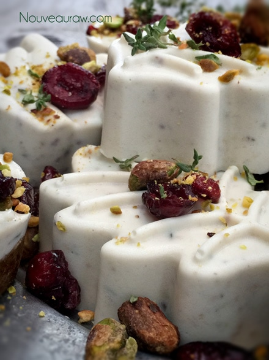

Vegan Cranberry & Pistachio Gourmet Dessert Cheese

~ high raw, vegan, gluten-free ~
This is my play on cheese and crackers. Take your favorite small mold (and I am not talking fungi here), press in the cracker crust, pour in the cranberry and pistachio agar cheese… allow it to set, and there you have it… the perfect one-bite-wonder.
You can always create some without the cracker crust for variety. I really like to use silicone molds since the little cheese morsels pop right out, You could also use a mini muffin pan, lining it with a cupcake liner.
Another idea is to use a baking pan, perhaps an 8 x 8″. Press the cracker crust into the bottom of the pan and pour the cheese mixture on top, chill and when the cheese often stirring, you can cut it into bite-sized squares.
I found the colors of the red, plump cranberries, crunchy, salted pistachios and fresh rosemary to look quite festive and colorful. I will admit that I didn’t use raw pistachios in this recipe… only by mistake. And I used cranberries that were sweetened, but only with fruit juice.
Anyway, I won’t keep you long here. It’s the holiday season, and we all have plenty to do. The great thing about this recipe is that you can make these a few days prior to your holiday gathering, thus taking some of the stress off of you as you prepare a buffet of food. I don’t recommend freezing them though. In the past, I have found that when agar based cheese thaws, it isn’t all fresh tasting. Enjoy and Happy Holidays!
Cracker crust:
Cheese base:
- 1 cup raw cashews, soaked 2 hours
- 1/4 cup fresh orange juice
- 1/4 cup water
- 2 Tbsp raw agave nectar
- 1 tsp nutritional yeast
- 1 tsp light chickpea miso
- ½ tsp Himalayan pink salt
- 1/4 cup dried sweetened cranberries
- 1/4 cup chopped pistachio
- 2 tsp fresh thyme
Agar gel:
- 1 1/2 cups water
- 1 Tbsp agar powder
Topping:
- Fresh thyme
- Diced cranberries
- Crushed walnuts
Preparation:
Cracker crust:
- Place the walnuts into the food processor, fitted with the “S” blade and process to a small crumble.
- Add the dates, salt, and process until the mixture sticks together when pinched.
- Press the crust into the molds and set aside.
Cheese base:
- Have the “cheese” mold(s) set aside and ready. You don’t need to oil or line the mold if using silicone ones. If you use a mini muffin pan, use cupcake liners. This will make 2 cups worth of cheese. Keep in mind that whatever impressions are in your container… it will leave that impression on your cheese.
- Soak the cashews, rinse and drain. The purpose of this step is just to soften them, so they blend into a smooth texture. You can use sunflower seeds in place of the cashews if you prefer.
- In a high-speed blender place the cashews, orange juice, water, agave, nutritional yeast, miso, and salt. Blend until it reaches a smooth consistency. This can take several minutes, depending on the blender.
- In a small pan combine water and agar. Bring to a boil then reduce the heat and simmer, stirring often with a whisk, until completely dissolved, about 5 to 10 minutes.
- Once the agar gel is ready, turn the blender on, creating a vortex in the batter, quickly add the cranberries, pistachios and the agar gel. Process until combined, scraping down the sides of the blender jar as necessary. You will need to move quickly. Agar sets up fast.
- Pour the batter into the containers that are set aside and cool uncovered in the refrigerator for 15-30 minutes. They are now ready to consume!
- Store covered the fridge for up to 5-7 days.

© AmieSue.com